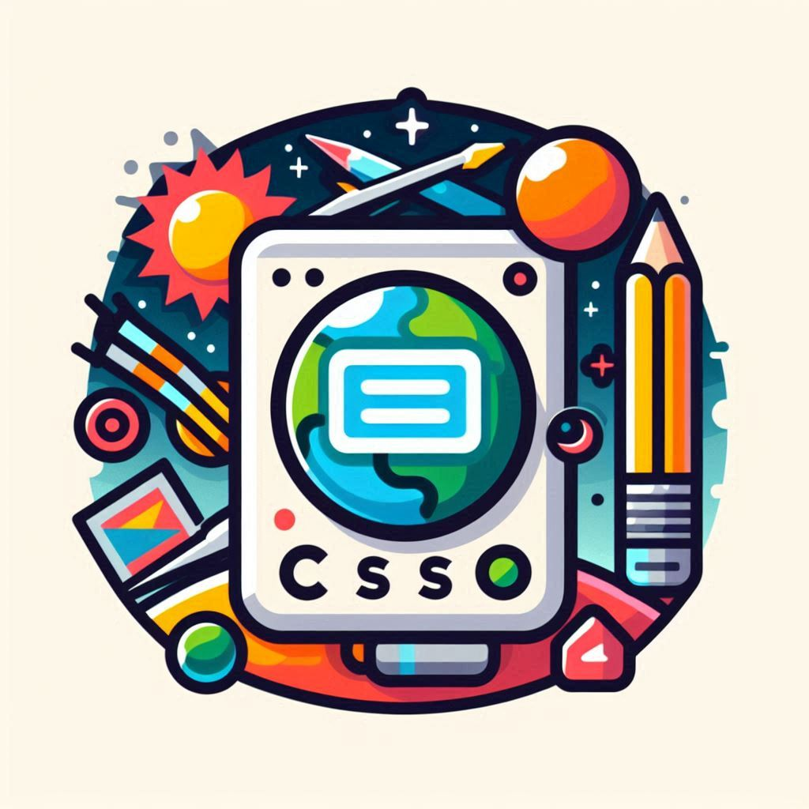

Curso de HTML5 com CSS3
HTML5 oferece suporte a áudio, vídeo e gráficos vetoriais diretamente no navegador, sem a necessidade de plugins adicionais. CSS (Cascading Style Sheets) é uma linguagem de estilo usada para controlar a apresentação visual do conteúdo HTML. Com o CSS, é possível definir layouts, cores, fontes e animações, permitindo criar interfaces mais atraentes e responsivas. A combinação de HTML5 e CSS possibilita a construção de websites modernos, dinâmicos e acessíveis em diferentes dispositivos.
Curso de Javascript
JavaScript é uma linguagem de programação amplamente utilizada para adicionar interatividade e dinamismo a páginas da web. Ao ser executado diretamente no navegador, permite criar funcionalidades como validação de formulários, animações, e manipulação do conteúdo HTML em tempo real. Além disso, JavaScript é a base de muitos frameworks e bibliotecas populares, como React, Angular e Vue.js, que facilitam o desenvolvimento de aplicações web complexas. Com a sua versatilidade, JavaScript é uma peça-chave no desenvolvimento web moderno, permitindo criar experiências de usuário mais ricas e interativas.
Roger Macedo
Linkedin: https://www.linkedin.com/in/roger-macedo-5007b1b1/
Github: https://github.com/rogersmacedopyInstagram: https://www.instagram.com/_rogermacedo/